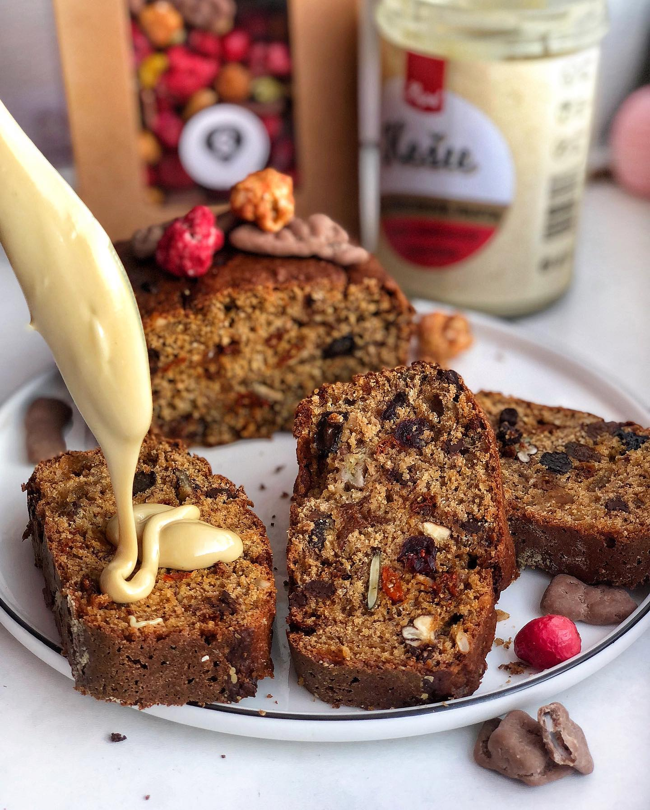

Ovocný chlebíček podľa @rommiemax — Normy Jedál
•
Ovocný chlebíček👌😍 vyzerá trochu ako štóla dala som doň snáď všetko od @svetplodu čo ma napadlo.
95g arašidové maslo
90g jablková výživa
1 vajce
20g goji
30g brusnice sušené
50ml mlieko
20g moruša sušená @svetplodu
15g pekany @svetplodu
4 suš.marhule (43g) @svetplodu
25g MYX vitalita @svetplodu
1 banán (111g)
30g xilytol @svetplodu
20g vegan čoko kvapky @svetplodu
1čl jedla soda
130g mleté ovsené vločky
Všetko postupne vymiešať od začiatku ako je písané a piecť v chlebovej forme (23,5cm) na 180’C 40-45min
5% na celu objednávku @svetplodu kód rommiemax5
#rommiemaxrecepty
#ovocnychlebicek #svetploducz #svetplodu #mojerano #mojeranajky #nebickovpapulke #nebevhube #foodporn #foodies #ranajky #breakfast #peciemslaskou #peceniejeradost